공조냉동기계기사(구) (2010-03-07 기출문제)
1과목: 기계열역학
1. 보일러 입구의 압력이 9800kN/m2이고, 복수기의 압력이 4900N/m2일 때 펌프 일은 약 몇 kJ/kg 인가? (단, 물의 비체적은 0.001m3/kg이다.)
- -9.79
- -15.17
- -87.25
- -180.52
(정답률: 60%)

2. 잘 단열된 노즐에서 공기가 0.45MPa에서 0.15 MPa로 팽창한다. 노즐 입구에서 공기의 속도는 50m/s, 온도는 150℃이며 출구에서의 온도는 45℃이다. 출구에서의 공기의 속도는? (단, 공기의 정압비열과 정적비열은 1.0035 kJ/kgㆍK, 0.7165 kJ/kgㆍK 이다.)
- 약 350 m/s
- 약 363 m/s
- 약 455 m/s
- 약 462 m/s
(정답률: 41%)
3. 단순 압축성 물질의 압력-체적-온도사이의 관계식을 나타내는 상태방적식 Pv=RT에 대한 다음 설명 중 잘못된 것은?
- 이상 기체에 적용할 때 정확한 결과를 얻는다.
- 압력이 충분히 높은 기체에 적용할 때 정확한 결과를 얻는다.
- 밀도가 충분히 낮은 기체에 적용할 때 정확한 결과를 얻는다.
- 분자 사이에 작용하는 힘이 없다고 가정할 수 있는 기체에 적용할 때 정확한 결과를 얻는다.
(정답률: 56%)
4. 다음 그림은 열교환기를 흐름 배열(flow arrangement)에 따라 분류한 것이다. 맞는 것은?
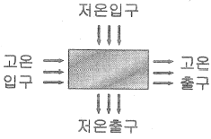
- 평행류
- 대향류
- 병행류
- 직교류
(정답률: 71%)
5. 500 W의 전열기로 4 kg의 물을 20℃에서 90℃까지 가열하는데 몇 분이 소요되는가? (단, 전열기에서 열은 전부 온도 상승에 사용된다. 물의 비열은 4180 J/kgㆍK이다.)
- 16
- 27
- 39
- 45
(정답률: 62%)
6. 고온열원(T1)과 저온열원(T2) 사이에서 역카르노 사이클에 의한 열펌프(heat pump)의 성능계수는?
- (T1-T2)T1
- T2/(T1-T2)
- T1/(T1-T2)
- (T1-T2)/T2
(정답률: 62%)
7. 상온의 감자를 가열하여 뜨거운 감자로 요리하였다. 감자의 에너지 변동 중 맞는 것은?
- 위치에너지가 증가
- 엔탈피 감소
- 운동에너지 감소
- 내부에너지가 증가
(정답률: 75%)
8. 흑체의 온도가 20℃에서 80℃로 되었다면 방사하는 복사 에너지는 약 몇 배가 되는가?
- 1.2
- 2.1
- 4.0
- 5.0
(정답률: 61%)
9. 체적이 0.3 m3인 튼튼한 밀폐 용기에 물이 50kg 들어있으며 그 압력은 100 kPa이다. 이 포화상태의 물을 가열할 경우 일어나는 변화로 알맞은 것은? (단, 물의임계점에서의 비체적은 0.003155 m3/kg이고, 100 kPa에서의 포화수 및 포화증기의 비체적은 각각 0.001043 m3/kg, 1.694m3/kg이다.)(오류 신고가 접수된 문제입니다. 반드시 정답과 해설을 확인하시기 바랍니다.)
- 기화가 일어나 수증기로 바뀌면서 압력과 온도가 올라간다.
- 응축이 일어나 액체 상태로 바뀌면서 압력과 온도가 올라간다.
- 액체와 증기의 비율이 그대로 유지된 채로 압력과 온도가 올라간다.
- 기화가 일어나 수증기로 바뀌면서 압력과 온도는 그대로 유지된다.
(정답률: 35%)
10. 고체에 에너지를 전달하여 온도를 높이는 여러가지 방법들 중에서 전달되는 에너지가 일이 아닌 것은?
- 프레스로 소성 변형시킨다.
- 전원을 연결하여 전류를 통과시킨다.
- 자기장을 가하여 자화시킨다.
- 강력한 빛을 쪼인다.
(정답률: 64%)
11. 그림은 압력-온도선도이다. 다음 설명 중 틀린 것은?
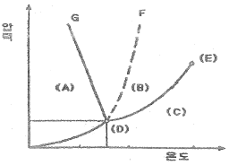
- (A)는 고체, (B)는 액체, (C)는 기체이다.
- (D)는 삼중점으로 물의 경우 압력은 대기압보다 낮다.
- (E)는 임계점이다.
- 융해곡선으로서 물은 파선 F에, 그 밖의 대부분의 물질은 실선 G에 해당한다.
(정답률: 56%)
12. 압력 250 kPa, 체적 0.35 m3의 공기가 일정 압력 하에서 팽창하여, 체적이 0.5m3로 되었다. 이때의 내부에너지의 증가가 93.9 kJ이었다면, 팽창에 필요한 열량은 약 몇 kJ인가?
- 43.8
- 56.4
- 131.4
- 175.2
(정답률: 64%)
13. 어느 열기관이 33 kW의 일을 발생할 때 1시간 동안의 일을 열량으로 환산하면 약 얼마인가?
- 83600 kJ
- 104500 kJ
- 118800 kJ
- 988780 kJ
(정답률: 67%)
14. 내부에너지가 40 kJ, 절대압력이 200 kPa, 체적이 0.1m3, 절대온도가 300K인 계의 엔탈피는 약 몇 kJ인가?
- 42
- 60
- 80
- 240
(정답률: 63%)
15. 다음의 열역학 상태량 중 종량적 상태량은?
- 압력
- 체적
- 온도
- 밀도
(정답률: 66%)
16. 분자량이 29이고, 정압비열이 10⑤ J/kgㆍK인 기체의 기체상수는 약 몇 J/kgㆍK인가? (단, 일반기체상수는 8314.5 J/kmolㆍK이다.)
- 976
- 287
- 34.7
- 29.3
(정답률: 52%)
17. 절대압력 100 kPa, 온도 100℃인 상태에 있는 수소의 비체적(m3/kg)은? (단, 수소의 분자량은 2이고, 일반기체상수는 8.3145 kJ/kmolㆍK 이다.)
- 약 15.5
- 약 0.42
- 약 3.16
- 약 0.84
(정답률: 51%)
18. 다음과 같은 온도범위에서 작동하는 카르노(Carnot)사이클 열기관이 있다. 이 중에서 효율이 가장 좋은것은?
- 0℃와 100℃
- 100℃와 200℃
- 200℃와 300℃
- 300℃와 400℃
(정답률: 62%)
19. 이상기체 1kg이 가역등온 과정에 따라 P1=2kPa, V1=0.1m3로 부터 V2=0.3m3로 변화했을 때 기체가 한 일은 몇 주울(J)인가?
- 9540
- 2200
- 954
- 220
(정답률: 52%)
20. 반데발스(van der Waals)의 상태 방정식은
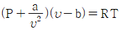
로 표시된다. 이 식에서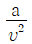
, b는 각각 무엇을 고려하는 상수인가?- 분자간의 작용 인력, 분자간의 거리
- 분자간의 작용 인력, 분자 자체의 부피
- 분자 자체의 중량, 분자간의 거리
- 분자 자체의 중량, 분자 자체의 부피
(정답률: 62%)
2과목: 냉동공학
21. 다음 설명 중 ( )에 적당한 것은?
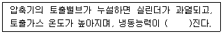
- 낮았다가 높아
- 낮아
- 일정해
- 높아
(정답률: 75%)
22. 흡수식 냉동기의 재생기로 들어가는 용액의 농도를 ζ1, 발생기에서 나오는 용액의 농도를 ζ2라고 할 때 용액순환비 a를 나타내는 식으로 적당한 것은?
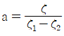
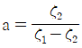
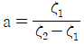
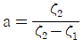
(정답률: 47%)
23. 20℃, 500kg의 물을 -10℃의 얼음으로 만들고자 한다. 이때 필요한 냉동능력은 약 몇 RT인가? (단, 물의 비열을 1kcal/kg℃, 얼음의 비열을 0.5kcal/kg℃, 물의 응고잠열을 80kcal/kg, 1RT를 3320kcal/h로 한다.)
- 9.79
- 13.55
- 15.81
- 16.57
(정답률: 61%)
24. 두께 20cm의 벽돌 벽이 있다. 벽 외측의 온도 15℃, 벽 내측의 온도가 25℃일 때 이 벽을 통하여 흐르는 열량은 몇 kcal/m2h인가? (단, 벽돌의 열전도율(λ)은 0.8 kcal/mh℃ 이다.)
- 20
- 40
- 100
- 200
(정답률: 61%)
25. 다음과 같은 냉동 사이클 중 성적계수가 가장 큰 사이클은 어느 것인가?
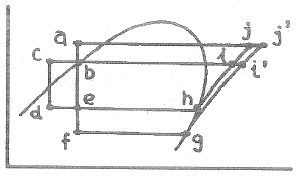
- b - e - h - i - b
- c - d - h - i - c
- b - f - g - j - b
- a - e - h - j - a
(정답률: 72%)
26. 다음 T-S 선도와 같은 카르노 사이클에서 열펌프(Heat Pump)로 작동할 때의 성적계수는 약 얼마인가?
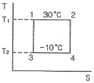
- 7.57
- 1.5
- 0.75
- 6.57
(정답률: 58%)
27. 냉동장치에서 압력용기의 안전장치로 사용되는 가용전 및 파열판에 대한 설명이다. 옳지 않은 것은?
- 파열판의 파열압력은 내압시험 압력이상의 압력으로 한다.
- 응축기에 부착하는 가용전의 용융온도는 보통 75℃ 이하로 한다.
- 안전밸브와 파열판을 부착한 경우 파열판의 파열압력은 안전밸브의 작동 압력이상으로 해도 좋다.
- 파열판은 터보 냉동기에 주로 사용된다.
(정답률: 52%)
28. 냉동기의 압축기에 사용되는 윤활유의 구비성질이 아닌 것은?
- 저온에서 응고점이 충분히 낮고, 고온에서 열화가 되지 않을 것
- 인화점이 높고, 냉매에 잘 용해될 것
- 수분 함유량이 적고, 전기절연내력이 클 것
- 장기간 사용하여도 변질되거나 열화되지 않을 것
(정답률: 77%)
29. 냉동기 중 공급 에너지원이 동일한 것끼리 이루어진 것은?
- 흡수식 냉동기, 기체 냉동기
- 증기분사 냉동기, 증기 압축 냉동기
- 기체 냉동기, 흡수 냉동기
- 증기분사 냉동기, 흡수 냉동기
(정답률: 68%)
30. 액 분리기에 대하여 기술할 때 옳은 것은?
- 액 분리기는 R - 22의 냉동장치에서 액을 반드시 건조기로 되돌리는 일을 한다.
- 액 분리기는 흡입관 중의 가스와 액을 분리하여 액 압축을 방지시킨다.
- 액 분리기는 압축기에 액과 가스를 분리하는 것이다.
- 액 분리기는 암모니아의 냉동장치에는 사용하지 않는다.
(정답률: 61%)
31. 무기질 브라인이 아닌 것은?
- CaCl2
- CH3OH
- MgCl2
- NaCl
(정답률: 70%)
32. 전자변(solenoid valve) 설치시 주의 사항이 아닌 것은?
- 코일 부분이 상부로 오도록 수직으로 설치한다.
- 전자변 직전에 스트레이너를 장치한다.
- 배관시 전자변에 부당한 하중이 걸리지 않아야한다.
- 전자변 본체의 유체 방향성에 무관하게 설치한다.
(정답률: 75%)
33. 다음 중간 압력에 대한 설명 중 맞는 것은? (단, 저압 압축기, 고압 압축기 모두 건조 포화증기가 흡입 압축되는 정상운전을 하는 것으로 고려한다.)
- 중간 압력을 저압에 가까이 하면 성적계수는 커진다.
- 중간 압력을 고압에 가까이 하면 성적계수는 커진다.
- 중간 압력이 낮을수록 냉동효과는 커진다.
- 중간 압력이 낮을수록 고압 압축기 일량이 적어진다.
(정답률: 41%)
34. 냉동장치의 제어에 관한 설명 중 올바른 것은?
- 온도식 자동팽창밸브는 증발기 입구의 냉매가스온도가 일정한 과열도로 유지되도록 냉매유량을 조절하는 팽창밸브이다.
- 증발온도가 다른 2대의 증발기를 1대의 압축기로 운전 할 때 증발압력조정밸브는 증발온도가 높은 쪽의 증발기 출구쪽에 설치한다.
- 흡읍압력조정밸브는 증발기 입구측에 설치하여 기동시 과부하 등으로 인해 압축기용 전동기가 손상되기 쉬운것을 방지한다.
- 저압축 플로트식 팽창밸브는 주로 건식증발기의 액면 높이에 따라 냉매의 유량을 조절하는 것이다.
(정답률: 50%)
35. 공기열원 수가열 R-22 열펌프 장치를 가열운전(시운전)하는 상태에서 압축기 토출밸브 부근에서 노출가스온도를 측정하였더니 120~140℃로 나타났다. 이러한 운전상태로 나타난 원인이나 상황 등과 관계가 없는 설명은?
- 냉매 분해가 일어날 가능성이 있다.
- 팽창밸브를 지나치게 교축 하였을 가능성이 있다.
- 공기측 열교환기(증발기)에서 눈에 띄게 착상이 일어나면 이것도 원인이 된다.
- 가열측 순환온수의 유량을 설계값 보다 많게 하는 것도 원인이 된다.
(정답률: 52%)
36. to=-20의 R-22 냉동장치가 있고, 냉매 순환량 qmr=300kg/h에서 건조포화 증기를 흡입압축 하는 것으로 한다. 액분리기 드럼의 내경은 약 몇 m정도로 하면 좋은가? (단, 액분리기의 가스속도를 0.5m/s로 하고, -20℃의 R-22 건조포화 증기의 비체적 v=0.0925 m3/kg이다.)
- 0.14
- 0.58
- 1.42
- 1.98
(정답률: 24%)
37. 폭 12m, 길이 25m, 높이 4m의 철근 콘크리트 건물로 된 냉각실을 암모니아 직접 팽창식으로, 외경 60.5mm 강관 1,400m를 사용하여 -18℃로 유지하려고 한다. 냉각관내의 암모니아 증발온도는 -28℃로 하고 강관 표면의 열통과율은 11.2kcal/m2h℃라 할 때 소요 냉동능력은 약 얼마인가?
- 4829kcal/h
- 26600kcal/h
- 29800kcal/h
- 31200kcal/h
(정답률: 50%)
38. 대기압에서 암모니아액 1kg을 증발시킨 열량은 0℃ 얼음 몇 kg을 융해시킨 것과 같은가?
- 2.1
- 3.1
- 4.1
- 5.1
(정답률: 62%)
39. 냉동장치에서 증발온도를 일정하게 하고 응축온도를 높일 때 일어나는 현상은?
- 성적계수 증가
- 압축일량 감소
- 토출가스온도 감소
- 플래쉬가스 발생량 증가
(정답률: 75%)
40. 증발기 중 가정용 냉장고, 쇼케이스 등과 같이 소형냉동시스템에 주로 사용하는 것은?
- 만랙식 셸엔드 튜브식 증발기
- 건식 셸엔드 튜브식 증발기
- 나관 코일식 증발기
- 헤링본식 증발기
(정답률: 50%)
3과목: 공기조화
41. 배관설비 중 보일러의 안전수면을 유지시키기 위한 설비는 어느 것인가?
- 플랜지 이음
- 리버스 리턴 배관
- 하트포드 배관
- 슬리브 이음
(정답률: 78%)
42. 어떤 실의 난방 부하를 계산한 결과 5000kcal/h였다. 증기난방으로 할 경우 소요 방열면적은 약 얼마인가? (단, 난방조건은 표준상태, 증기의 온도 102℃, 실내온도 18.5℃로 한다.)
- 5.6m2
- 7.7m2
- 8.9m2
- 11.1m2
(정답률: 57%)
43. 어떤 구조체의 손실열량을 계산하는 식 Q=KㆍAㆍ△t에서 K는 무엇을 의미 하는가?
- 열통과율[kcal/m2h℃]
- 열전도율[[kcal/mh℃]
- 열저항[m2℃/[kcal]]
- 열복사율[[kcal/m2h℃]
(정답률: 68%)
44. 열원방식에서 에너지를 선택ㆍ결정할 때 고려되어야 할 사항으로 틀린 것은?
- 에너지원 확보의 안정성
- 열원기기의 유지ㆍ보수관리 필요성
- 복합에너지 시스템으로 서 시스템 구축
- 기기의 용량 분할의 필요성
(정답률: 47%)
45. 공기 중의 수분이 벽이나 천장, 바닥 등에 닿았을 때 응축되어 이슬이 맺히는 경우가 있다. 이와 같은 수분의 응축 결로를 방지하는 방법으로 적당하지 않은 것은?
- 다습한 외기를 도입하지 않도록 한다.
- 벽체인 경우에는 단열재를 부착한다.
- 유리창인 경우에는 2중유리(Pair glass)를 사용한다.
- 공기와 접촉하는 벽면의 온도를 노점온도 이하로 낮춘다.
(정답률: 78%)
46. 주철제 보일러의 특징을 설명한 것으로 틀린 것은?
- 섹션을 분할하여 반입하므로 현장설치의 제한이 적다.
- 강제 보일러보다 내식성이 우수하며 수명이 길다.
- 강제 보일러보다 급격한 온도변화에 강하여 고온ㆍ고압의 대용량으로 사용된다.
- 섹션을 증가시켜 간단하게 출력을 증가시킬 수 있다.
(정답률: 76%)
47. 공조기 냉각코일의 출구공기를 재열하는 경우가 아닌 것은?
- 공조기의 풍량이 계산량보다 적을 때
- 실내의 잠열취득 잠열취득 비율이 커서 포화선과 교차하지 않을 때
- 현열비가 작아 포화선과 교차하지 않을 때
- 이중 덕트를 사용할 때
(정답률: 40%)
48. 인체의 발열에 관한 설명으로 틀린 것은?
- 증발 : 인체 피부에서의 수분이 증발하며 그 증발열로 체내 열을 방출한다. 입에서 불어내는 공기 중에도 증발한 수분이 함유되어 있다.
- 대류 : 인체 표면과 주위공기와의 사이에 열의 이동으로 인위적으로 조절이 가능하며 주위공기의 온도와 기류에 영향을 받는다.
- 복사 : 실내온도와 관계없이 유리창과 벽면 등의 표면 온도와 인체 표면과의 온도차에 따라 실제 느끼지 못하는 사이 방출되는 열이다.
- 전도 : 겨울철 유리창근처에서 추위를 느끼는 것은 전도에 의한 열 방출이다.
(정답률: 70%)
49. 고속 덕트의 설계법에 관한 설명 중 틀린 것은?
- 송풍기 동력이 과대해진다.
- 동력비가 증가된다.
- 공조용 덕트는 소음의 고려가 필요하지 않다.
- 리턴 덕트와 공조기에서는 저속방식과 같은 풍속으로 한다.
(정답률: 82%)
50. 증기 사용압력이 가장 낮은 보일러는?
- 노통 연관 보일러
- 수관 보일러
- 관류 보일러
- 입형 보일러
(정답률: 61%)
51. 냉방 시 열의 종류와 설명이 틀린 것은?
- 인체의 발생열 - 현열, 잠열
- 틈새바람에 의한 열량 - 현열, 잠열
- 외기 도입량 - 현열, 잠열
- 조명의 발생열 - 현열, 잠열
(정답률: 70%)
52. 공기조화 방식에 대한 설명 중 옳은 것은?
- 각층 유닛 방식은 대규모 건물이고 다층인 경우에 적합하다.
- 이중 덕트 방식은 에너지 절약적인 방식이다.
- 팬코일 유닛 방식은 전 공기식에 비해 덕트 면적이 크다.
- 단일 덕트 방식에는 혼합상자를 사용한다.
(정답률: 64%)
53. 온퐁난방의 특징으로 틀린 것은?
- 연소장치, 송풍장치 등이 일체로 되어 있어 설치가 간단하다.
- 예열부하가 거의 없으므로 기동시간이 아주 짧다.
- 토출 공기온도가 높으므로 쾌적도는 떨어진다.
- 실내 층고가 높을 경우에는 상하의 온도차가 작다.
(정답률: 69%)
54. 증기 보일러에서 환산 증발량에 관한 설명으로 옳은 것은?
- 대기압상태에서 100℃의 포화수를 100℃의 건포화증기로 증발시켜 상태변화시키는 경우의 증발량
- 대기압상태에서 37.8℃의 포화수를 100℃의 건포화증기로 증발시켜 상태변화시키는 경우의 증발량
- 대기압상태에서 100℃의 포화수를 소요증기로 증발시켜 상태변화시키는 경우의 증발량
- 대기압상태에서 37.8℃의 포화수를 소요증기로 증발시켜 상태변화시키는 경우의 증발량
(정답률: 68%)
55. 덕트의 배치 방식에 관한 설명 중 틀린 것은?
- 간선덕트 방식은 주덕트인 입상덕트로부터 각 층에서 분기되어 각 취출구로 취출관을 연결한다.
- 개별 덕트 방식은 주덕트에서 각개의 취출구로 각개의 덕트를 통해 분산하여 송풍하는 방식으로 각실의 개벽 제어성은 우수하다.
- 환상덕트의 방식은 2개의 덕트말단을 루프(loop) 상태로 연결함으로써 덕트말단에 가까운 취출구에서 송풍량의 언밸런스가 발생될 수 있다.
- 각개 입상 덕트 방식은 호텔, 오피스빌딩 등 공기ㆍ수 방식인 덕트병용 팬코일 유닛방식이나 유인 유닛방식등에 사용된다.
(정답률: 69%)
56. 중앙식 공조방식의 특징이 아닌 것은?
- 송풍량이 많으므로 실내공기의 오염이 적다.
- 리턴 펜을 설치하면 외기내방이 가능하게 된다.
- 소형건물에 적합하며 유리하다.
- 덕트가 대형이고 개별식에 비해 설치공간이 크다.
(정답률: 74%)
57. 송풍기의 법칙에서 회전속도가 일전하고 직경이 d, 동력이 L인 송풍기의 직경을 d1으로 했을 때 동력 L1을 나타내는 식은?
- L1=(d1/d)2L
- L1=(d1/d)3L
- L1=(d1/d)4L
- L1=(d1/d)5L
(정답률: 79%)
58. 유효 온도차(상당 외기온도차)에 대한 설명 중 틀린 것은?
- 태양 일사량을 고려한 온도차이다.
- 계절, 시각 및 방위에 따라 변화한다.
- 실내온도와는 무관하다.
- 냉방 부하시에 적용된다.
(정답률: 76%)
59. 습공기선도(t-x선도)상에서 알 수 없는 것은?
- 엔탈피
- 습구온도
- 풍속
- 상대습도
(정답률: 74%)
60. 실내의 사용목적에 적합한 온도 및 습도조건을 일정하게하고 장치의 경제적인 운전을 위하여 각종 기기의 운전, 정지, 냉온수의 유량조절, 송풍량의 조절 등을 하는 자동제어 장치에 직접적으로 해당되지 않는 것은?
- 전동 댐퍼
- 전자 2방 밸브
- 휴미디스탯
- 플로트레스 스위치
(정답률: 50%)
4과목: 전기제어공학
61. 그림과 같은 단자 1, 2사이의 계전기접점회로 논리식은?
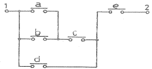
- {(a+b)d+c}e
- {(ab+c)d}+e
- {(a+b)c+d}e
- (ab+d)c+e
(정답률: 59%)
62. 전기기기의 절연저항 측정에 관한 사항으로 틀린 것은?
- 절연저항은 무한대의 값을 갖는 것이 가장 이상적이다.
- 메거의 라인(L)단자에 기기의 코일단자를 연결한다.
- 메거의 접지(E)단자에 기기 외함을 연결한다.
- 절연저항의 측정치는 10Ω 이하가 적당하다.
(정답률: 52%)
63. 타이머를 이용한 난방기구의 제어는 어느 분류에 속하는가?
- 공정제어
- 시퀀스제어
- 수치제어
- 피드백제어
(정답률: 60%)
64. 다음 회로의 임피던스는?
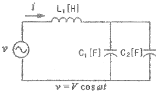
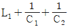
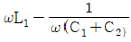
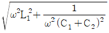
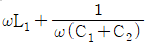
(정답률: 36%)
65. 그림과 같은 제어에 해당하는 것은?
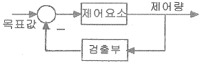
- 개방 제어
- 시퀀스 제어
- 개루프 제어
- 폐루프 제어
(정답률: 57%)
66. 단위에서 Ωㆍsec와 같은 단위는?
- F
- F/m
- H
- H/m
(정답률: 46%)
67. 운전자가 배치되어 있지 않는 엘리베이터의 자동제어는?
- 추종제어
- 프로그램제어
- 정치제어
- 프로세스제어
(정답률: 67%)
68. 전압을 V, 전류를 I, 저항을 R, 그리고 도체의 비저항을 p라 할 때 옴의 법칙을 나타낸 식은?
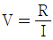
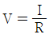
- V=IR
- V=IRp
(정답률: 68%)
69. 논리식
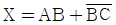
에서 작동 설명이 잘못된 것은?- A=1, B=0, C=1 이면 X=1 이다.
- A=1, B=1, C=0 이면 X=1 이다.
- A=0, B=0, C=0 이면 X=0 이다.
- A=0, B=0, C=1 이면 X=1 이다.
(정답률: 50%)
70. 그림과 같은 회로에서 전달함수
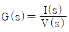
를 구하면?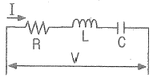
- R+Ls+Cs
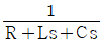
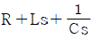
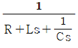
(정답률: 57%)
71. PLC의 구성에 해당되지 않는 것은?
- 입력장치
- 제어장치
- 주변용장치
- 출력장치
(정답률: 66%)
72. 그림과 같은 연산증폭기를 사용한 회로의 기능은?
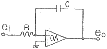
- 적분기
- 미분기
- 가산기
- 제한기
(정답률: 57%)
73. △ 결선된 3상 평형회로에서 부하 1상의 임피던스가 40 + j30Ω 이고 200V의 전원전압일 때 선전류는 몇 [A]인가?
- 4
- 4√3
- 5
- 5√3
(정답률: 47%)
74. 피드백 제어의 장점이 아닌 것은?
- 가장 간단한 제어계로 많이 사용된다.
- 외부 조건의 변화에 대한 영향을 줄일 수 있다.
- 목표 값을 정확히 달성 할 수 있다.
- 제어계의 특성을 향상 시킬 수 있다.
(정답률: 61%)
75. 변압기 Y-Y결선방법의 특성을 설명한 것으로 틀린 것은?
- 중성점을 접지할 수 있다.
- 상전압이 선간전압의 1/√3배가 되므로 절연이 용이하다.
- 선로에 제 3조파를 주로 하는 충전전류가 흘러 통신장해가 생긴다.
- 단상변압기 3대로 운전하던 중 한대가 고장이 발생해도 V결선 운전이 가능하다.
(정답률: 60%)
76. 사이클링(Cycling)을 일으키는 제어는?
- 비례 제어
- 적분 제어
- 비례적분 제어
- ON-OFF 제어
(정답률: 60%)
77. 정격주파수 60Hz의 농형 유도전동기의 1차 전압을 정격값으로 하고 50Hz에 사용할 때 낮아지는 것은?
- 온도
- 토크
- 역률
- 여자전류
(정답률: 55%)
78. 제어대상의 상태를 자동적으로 제어하며, 목표값이 제어공정과 기타의 제한 조건에 순응하면서 가능한 가장 짧은 시간에 요구되는 최종상태까지 가도록 설계하는 제어는?
- 디지탈제어
- 적응제어
- 최적제어
- 정치제어
(정답률: 61%)
79. 어떤 도체에 10C의 전기량이 이동하여 50J의 일을 했을 경우 전압은?
- 0.2[V]
- 5[V]
- 500[V]
- 300[V]
(정답률: 41%)
80. 권선형 유도전동기의 기동방법으로 가장 적당한 것은?
- 전전압기동법
- 리액터기동법
- 기동보상기법
- 2차 저항법
(정답률: 40%)
5과목: 배관일반
81. 강제순환식 급탕설비의 배관구배는 어느 정도로 하는 것이 좋은가?
- 1/100
- 1/150
- 1/200
- 1/250
(정답률: 33%)
82. 냉매가 메칠크로라이드(CH3Cl)인 경우 사용하여서는 안되는 배관 재료는?
- 알루미늄 합금판
- 탈산 동관
- 탄소강 강관
- 스테인리스 강관
(정답률: 39%)
83. 급탕설비에 관한 설명으로 틀린 것은?
- 중앙식 급탕설비에서의 급탕온도는 일반적으로 60℃를 기준으로 한다.
- 증기취입식 기수혼합 가열장치에는 소음을 줄이기 위하여 사이렌서를 설치한다.
- 배관과 보일러 또는 저탕탱크와의 접속에는 역류방지기를 설치한다.
- 리버스리턴 배관은 배관내 마찰손실수두를 줄이기 위한 방식이다.
(정답률: 51%)
84. 동관의 이음에서 기계의 분해, 점검, 보수를 고려하여 사용하는 이음법은?
- 납땜이음
- 플라스턴이음
- 플레어이음
- 소켓이음
(정답률: 65%)
85. 펌프 주위의 배관시 주의할 사랑을 설명한 것으로 틀린 것은?
- 흡입관의 수평배관은 펌프를 향해 위로 올라가도록 설계한다.
- 토출부에 설치한 체크 밸브는 서징현상 방지를 위해 펌프에서 먼 곳에 설치한다.
- 흡입구(푸트밸브)는 동수위면에서 관경의 2배 이상 물속으로 들어가게 한다.
- 흡입관의 길이는 되도록 짧게하는 것이 좋다.
(정답률: 61%)
86. 역지밸브(check valve)애 대한 기술이다. 틀린 것은?
- 관내유체의 흐름을 일정한 방향으로 유지하기 위하여 사용한다.
- 스윙형, 리프트형, 풋형 등이 있다.
- 구조에 따라 수평관, 수직관에 사용할 수 있다.
- 필요할 때 수동으로 개폐하여야 한다.
(정답률: 68%)
87. 보온 시공시 외피의 마무리재로서 옥외 노출부에 사용되는 재료로서 가장 적당한 것은?
- 면포
- 비닐 테이프
- 방수 마포
- 아연 철판
(정답률: 60%)
88. 온수난방 배관에서 리버스 리턴(reverse return)방식을 채택하는 이유는?
- 온수의 유량 분배를 균일하게 하기 위하여
- 배관의 길이를 짧게 하기 위하여
- 배관의 신축을 흡수하기 위하여
- 온수가 식지 않도록 하기 위하여
(정답률: 70%)
89. 냉방부하 구분에 있어서 장치부하에 속하지 않는 것은?
- 덕트의 열손실
- 송풍기부하
- 재열부하
- 전열부하
(정답률: 35%)
90. 일반적으로 벽체내의배수입관에 연결하여 사용하는 배수 트랩은?
- 드럽 트랩
- P 트랩
- S 트랩
- U 트랩
(정답률: 44%)
91. 신축곡관이라고 통용되는 신축이음은?
- 스위블형
- 벨로즈형
- 슬리브형
- 루프형
(정답률: 50%)
92. 급수설비 중 수평배관의 지지간격이 3m일 경우 강관의 관경은 얼마인가?
- 20A 이하
- 25~30A
- 32~40A
- 50~80A
(정답률: 39%)
93. 가스 배관내의 유량이 2배로 증가하면 압력손실은 어떻게 되는가?
- 압력손실은 2배로 된다.
- 압력손실은 4배로 된다.
- 압력손실은 8배로 된다.
- 압력손실은 16배로 된다.
(정답률: 60%)
94. 지역 냉난방설비에 대하여 잘못 설명된 것은?
- 에너지의 효율적 이용 및 배열이용이 가능하다.
- 대기오염물질이 증가한다.
- 도시의 방재수준의 향상이 가능하다.
- 사용자에게는 화재에 대한 염려가 없다.
(정답률: 71%)
95. 배관설비에서 수압시험 이외의 방법으로 누설시험을 하는 배관은 어느 것인가?
- 액화 석유 가스배관
- 급수배관
- 급탕배관
- 실내 소화전 배관
(정답률: 63%)
96. 관경 300mm, 배관길이 500m의 중랍 가스수송관에서 AㆍB점의 게이지 압력이 3kg/cm2, 2kg/cm2인 경우 가스유량은 약 얼마인가? (단, 가스 비중 0.64, 유량계수 52.31로 한다.)
- 10238 m3/h
- 2⑤83 m3/h
- 38315 m3/h
- 40153 m3/h
(정답률: 38%)
97. 소형, 경량으로 설치면적이 적고 효율이 좋으므로 가장 많이 사용되고 있는 냉각탑은?
- 대기식 냉각탑
- 대향류식 냉각탑
- 직교류식 냉각탑
- 밀폐식 냉각탑
(정답률: 60%)
98. 암모니아 냉매를 사용하는 흡수식 냉동기의 배관재료로 가장 좋은 것은?
- 주철관
- 동관
- 강관
- 동합금관
(정답률: 63%)
99. 통기관의 설치 목적 중 가장 적합한 것은?
- 배수의 유속을 조절한다.
- 배수 트랩의 봉수를 보호한다.
- 배수관 내의 진공을 완화한다.
- 배수관 내의 청결도를 유지한다.
(정답률: 64%)
100. 다음 중 동관용 공구가 아닌 것은?
- 익스팬더
- 사이징 툴
- 드레서
- 플레어링 툴 세트
(정답률: 62%)
펌프 일 = (출구 압력 - 입구 압력) / (물의 비체적 x 중력 가속도)
여기서, 입구 압력은 9800kN/m2, 출구 압력은 4900N/m2, 물의 비체적은 0.001m3/kg, 중력 가속도는 9.81m/s2이다.
따라서, 펌프 일은 다음과 같이 계산할 수 있다.
펌프 일 = (4900 - 9800) / (0.001 x 9.81) = -4900 / 0.00981 = -499.49 kJ/kg
하지만, 문제에서 답을 반올림하여 -9.79로 요구하고 있다. 이는 단위를 kg 대신 kJ로 바꾸어 계산한 결과이다. 따라서, 정확한 계산 결과를 반올림하여 단위를 맞춘 것이다.